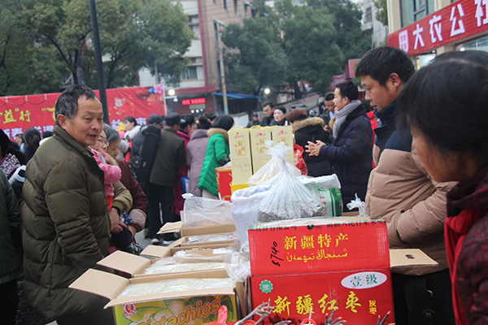

连载·黄冈日记①｜“穿防护服戴口罩和护目镜”的人突然来了
原文链接 备份链接 特邀作者 杨梅 程定琴 郝诗光 金昊 澎湃新闻记者 方岸 杜心羽 吴佳颖 整理 2020-03-06 07:12 来源：澎湃新闻 字号 【编者按】 新冠病毒给湖北乃至全国带来一场危机，黄冈是这场疫情的重灾区之一。在这场 …
特邀作者 杨梅 程定琴 郝诗光 梦轩 澎湃新闻记者 方岸 杜心羽 吴佳颖 整理
2020-03-07 07:43 来源：澎湃新闻
字号
【编者按】
新冠病毒给湖北乃至全国带来一场危机，黄冈是这场疫情的重灾区之一。在这场战役中，黄冈人经历了旁观-卷入-创伤-斗争-反思的过程。我们用亲历者日记连载的形式，试图纵深还原疫情侵袭下的黄冈这60天。
1月9日，官方宣布“不明原因肺炎”病原体初步判定为新型冠状病毒。11日，武汉市卫健委通报，截至前一天初步诊断新冠肺炎41例，其中已出院2例、重症7例、死亡1例，密切接触者739人，其中医务人员419人。
湖北省“两会”于1月11日至17日召开。（斜体字内容为编者所加，下同。）
【杨梅：黄冈市中心医院呼吸内科护士】
1月9日
科室的主任、医生已经在我们的微信群里通告，医院神经二内科有两位医护人员出现肺部感染，要求我们大家做好防护，不可大意。我们也开始向医院申请领用N95口罩及防护服一类的防护用品。
10日，神经二内科护士董春风入住我科31床。
医院接到卫健委通知，开始统计新冠肺炎的信息，开始每天上报感染情况，同时科室将非新冠肺炎的患者开出院单，要求所有的病人及家属佩戴一次性外科口罩。
12日，普通大众还没有意识到这个疾病的严重性及危害性，有一位刚入科的病人自觉症状比较轻，但因为CT提示肺上情况严重，医生给她下了病危通知，竟然一个电话投诉到黄冈市卫健委，控诉医生吓唬她。病人及家属的情绪都很严重，并且要求转诊武汉。不过，武汉的疫情严重，卫健委没有同意转诊。科室所有的医护人员除了要治疗抢救护理病人，还要小心地照顾病人的心理。
黄冈的医疗机构已收治了不少新冠肺炎患者，也有医护人员被感染。社会上不知情的市民还在参加一些群体性活动。
【郝诗光：江岸名都小区综合党支部书记，业委会副主任】
1月12日
上午在胜利新街举办了本年度最后一场爱心公益集市，500多人参加了活动。一个小伙儿从深圳回来，感觉到黄州是个有爱的城市，现场捐了500块钱，还决定明年不出去打工了，就留在黄州发展。

1月12日，胜利新街举办的爱心公益集市，500多人参加
碰到了孩子的班主任路过，提前剧透了孩子的考试成绩。孩子今年进步极大，我相当的开心。
孩子领了成绩单后，自己从学校走到了活动现场跟我汇合。他还没有跟我汇报我就立即承诺他：今天吃喝，都是岔（注：方言，“尽兴”的意思）的。前几天还在朋友圈里疯传的武汉发生不明原因的肺炎好像再也没有声音了，大街上人头攒动，大家都在忙着喜迎新年。估计忘了这一茬了吧。
胜利南村是个好地方，适合明年打造成主题公益集市的常设主办点。按场地面积看，一场活动容下千人左右没有问题。不过人多了也很麻烦，要向城管、公安机关提前报备，避免发生群体性事件和公共安全事故。
年前再搞一场活动，我也开始休息了。
【梦轩：已愈新冠肺炎患者】
1月12日至13日
己亥猪年的年末，忙碌的一年总算可以告一段落，我也可以稍微轻闲下来。原本想一边居家休息，一边不慌不忙地筹备过年。不料，一场不期而至的感冒打乱了我的计划。
1月12日，前一天我有点轻微感冒症状，流鼻涕，轻微头疼。
有点担心会不会是流感，我想还是去医院检查下。吃过早饭，开车去黄冈市一家以前常去的医院。医院的门诊大厅里人非常多，挂号、缴费、拿药的窗口，都排着三四十人的长长队伍。看来，冬春季节患感冒的人多。
我也跟着排队，挂号缴费窗口就排了半个小时。看病的人前后相接，咳嗽声也在门诊大厅里此起彼伏。除了我之外，整个大厅没有一个人戴口罩，负责挂号和收费的医生从小窗口里露出脸问话，他们也没有口罩。做了CT、抽血检查后，医生排除了流感，认为就是普通感冒，开了四天的打吊针的药水。
13日，我到医院接受输液。输液的病室里也是坐满了挂吊针、或等候打针的病人。跟前几天没区别的是，仍然没人戴口罩。
输液第二天，咳嗽没有了，其他感冒症状没有消失。第三天又发烧起来，我也没当回事，心想即便打针吃药，感冒也要一周左右才能好，干脆在家休息睡觉。感冒这几天里，我拒绝参加几个朋友或合作伙伴的公司年终活动，也拒绝了所有朋友的聚餐。
在家睡了两天，还是不见好转。这几天，发烧始终没退，一度还高烧到43摄氏度。我有点紧张了。
【程定琴：黄冈市中心医院呼吸内科护士】
1月13日
截至今天，我们科室已经住满了新型冠状病毒肺炎的患者。
科室在接到上级通知和要求后，立即和病房其他病种，诸如慢阻肺、支气管炎、肺部感染等普通常见呼吸系统疾病的患者及时做工作，要求病情尚轻的患者带口服药出院回家疗养，稍重的都转至别的医院继续治疗。
此刻，黄冈市中心医院呼吸内科已然成为黄冈市第一个新冠肺炎的隔离收治点，腾出的病房专门收治新冠肺炎的患者。才几天时间，病人迅速收满，患者数量增加之快完全超乎我们想象。
非常不幸地，科室里与我们一起战斗的5位同事相继被感染，3位护士、2位医生。这让我们非常难以接受。我们心里其实都已经很清楚，这种病毒它能够人传人。可是网上还是在时不时发布一些新型冠状病毒性肺炎相关信息，一些机构和专家还简单地在说“可防可控”。这才是最可怕的。
看着往日里跟我们一起上班、有说有笑的同事，此刻正毫无精神躺在病床上吸氧、输液；看着那些患者短短几天病情变化不定；看着那些照顾患者的家属也都一个一个感染住进来……我们除了痛心还有担忧。病毒不可怕，可是一种新型的病毒就很可怕了，因为我们对它一无所知，不知道它如何致病，致病后病情会怎样发展，有没有什么对症药，会不会致命。
想到这些心里害怕极了。但是让我特别感动的是，哪怕是到了这一刻，身边已经有人倒下了，在没有更好防护用品的情况下，我们科室没有一个人退缩。在科室人员严重不足，患者不断增多的高强度负荷下，大家都服从安排，每天穿梭在病房之间，为每一个患者提供服务。
科室王昌峰主任经常去各个县市开会到深更半夜，又赶来科室处理危重患者，还要整理相关信息资料；我们副主任黄虎翔因为奔赴各个医院会诊被感染住院，躺病床上也不忘隔空阅片会诊；我们最亲爱的彭金娥护士长因为科室人员不足，已经连续两个星期没休息，在科室加班加点；我们科室其他人员也是任劳任怨超负荷工作。
我知道其实大家心里都怕，试问有谁会不怕死呢，但是大家都没有放弃，没有退缩，因为这是我们的职责，我们肩负的使命！

黄冈市中心医院呼吸内科的医护人员举着“加油”纸条给自己打气
【杨梅：黄冈市中心医院呼吸内科护士】
1月15日
科室张红燕老师做了CT后发现两肺都有磨玻璃影，当即晚上就安排住了进来。据她自己回忆，之前一个星期她在上主班，住在走廊的刘某过来询问的时候没有佩戴口罩对着她咳了两下，只是当时她和病人都没有意识到会有传染，随后她咳了一个星期，自己在家里吃了一个星期的药，直到做了CT才知道感染了新冠肺炎。
晚上，张玉娇医生查看自己的CT时发现自己也有感染，此前她自己没有任何症状，只感到全身酸痛，还以为是总在全院跑会诊累到的原因。作为两个幼子的母亲，丈夫也是医院的医生，她感染以后，心理的负担比身体的病痛更重。
16日，科室的床位都已经安排满了，经过医院协调，将楼下的内分泌科空出来安排新冠肺炎的病人。张医生也住在了内分泌科的病房。
每天大家都在学习新冠肺炎的相关知识，诊治方案、防护措施、院感隔离……科室已经封闭，不能随意接收病人，家属也大部分清退出病房，科室门口安排保安值守，我们戴上了N95，但还是没有防护服。
【未完待续】
(本文来自澎湃新闻，更多原创资讯请下载“澎湃新闻”APP)
关键词 >> 抗疫日记,黄冈,抗疫,日记

澎湃新闻APP下载

原文链接 备份链接 特邀作者 杨梅 程定琴 郝诗光 金昊 澎湃新闻记者 方岸 杜心羽 吴佳颖 整理 2020-03-06 07:12 来源：澎湃新闻 字号 【编者按】 新冠病毒给湖北乃至全国带来一场危机，黄冈是这场疫情的重灾区之一。在这场 …
原文链接 备份链接 图片来源：半岛电视台 “ 全球新冠肺炎疫情播报，持续更新。 ” （本文持续更新中。文中段首所示时间为本文更新时间。） 意大利 0800【确诊病例升至1694例，总理签署新疫情防控法令】 截至当地时间1日22点，意大利累 …
原文链接 备份链接 澎湃新闻记者 胡丹萍 手术在无锡市传染病医院的负压手术室中施行 2月29日，“我国肺移植第一人”、著名肺移植专家陈静瑜教授团队历经5个小时在江苏无锡成功进行全球首例新冠肺炎病例双肺移植手术。 3月1日，陈静瑜在接澎湃新 …
原文链接 备份链接 新增和现有病例基数连续回落几天后，武汉各大医院终于度过最艰难的时刻。眼下，如何降低重症患者死亡率成为各大重症定点收治医院的首要任务。药物、血浆、ECMO等治疗手段已经纷纷进入临床应用，但面对捉摸不定的新冠病毒，医生们 …
原文链接 备份链接 2月17日晚11点左右，赴武汉支援的上海华山医院麻醉科医生罗猛强（左一）与“插管敢死队”同事冯昌等人完成一例插管。受访人供图 作者|中青报·中青网记者 张均斌 孙庆玲 编辑|张国 医生们清楚，一位新冠肺炎患者最危险的地 …